Common Problems
LeetCode
Managing Long Running Tasks
Understanding the Problem
🧑💻 What is LeetCode?
Let's be honest; LeetCode needs no introduction. You're probably spending many hours a day there right now as you prepare. But, for the uninitiated, LeetCode is a platform that helps software engineers prepare for coding interviews. It offers a vast collection of coding problems, ranging from easy to hard, and provides a platform for users to answer questions and get feedback on their solutions. They also run periodic coding competitions.
Functional Requirements
Core Requirements
- Users should be able to view a list of coding problems.
- Users should be able to view a given problem, code a solution in multiple languages.
- Users should be able to submit their solution and get instant feedback.
- Users should be able to view a live leaderboard for competitions.
Below the line (out of scope):
- User authentication
- User profiles
- Payment processing
- User analytics
- Social features
For the sake of this problem (and most system design problems for what it's worth), we can assume that users are already authenticated and that we have their user ID stored in the session or JWT.
Non-Functional Requirements
Core Requirements
- The system should prioritize availability over consistency.
- The system should support isolation and security when running user code.
- The system should return submission results within 5 seconds.
- The system should scale to support competitions with 100,000 users.
Below the line (out of scope):
- The system should be fault-tolerant.
- The system should provide secure transactions for purchases.
- The system should be well-tested and easy to deploy (CI/CD pipelines).
- The system should have regular backups.
It's important to note that LeetCode only has a few hundred thousand users and roughly 4,000 problems. Relative to most system design interviews, this is a small-scale system. Keep this in mind as it will have a significant impact on our design.
Here's how it might look on your whiteboard:
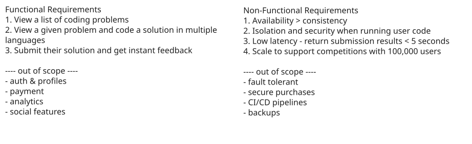
Requirements
Adding features that are out of scope is a "nice to have". It shows product thinking and gives your interviewer a chance to help you reprioritize based on what they want to see in the interview. That said, it's very much a nice to have. If additional features are not coming to you quickly, don't waste your time and move on.
The Set Up
Planning the Approach
Before you move on to designing the system, it's important to start by taking a moment to plan your strategy. Fortunately, for these common user-facing product-style questions, the plan should be straightforward: build your design up sequentially, going one by one through your functional requirements. This will help you stay focused and ensure you don't get lost in the weeds as you go. Once you've satisfied the functional requirements, you'll rely on your non-functional requirements to guide you through the deep dives.
Defining the Core Entities
I like to begin with a broad overview of the primary entities. At this stage, it is not necessary to know every specific column or detail. We will focus on the intricacies, such as columns and fields, later when we have a clearer grasp. Initially, establishing these key entities will guide our thought process and lay a solid foundation as we progress towards defining the API.
To satisfy our key functional requirements, we'll need the following entities:
- Problem: This entity will store the problem statement, test cases, and the expected output.
- Submission: This entity will store the user's code submission and the result of running the code against the test cases.
- Leaderboard: This entity will store the leaderboard for competitions.
In the actual interview, this can be as simple as a short list like this. Just make sure you talk through the entities with your interviewer to ensure you are on the same page. You can add User here too; many candidates do, but in general, I find this implied and not necessary to call out.
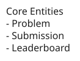
Entities
As you move onto the design, your objective is simple: create a system that meets all functional and non-functional requirements. To do this, I recommend you start by satisfying the functional requirements and then layer in the non-functional requirements afterward. This will help you stay focused and ensure you don't get lost in the weeds as you go.
API or System Interface
When defining the API, we can usually just go one-by-one through our functional requirements and make sure that we have (at least) one endpoint to satisfy each requirement. This is a good way to ensure that we're not missing anything.
Starting with viewing a list of problems, we'll have a simple GET endpoint that returns a list. I've added some basic pagination as well since we have far more problems than should be returned in a single request or rendered on a single page.
GET /problems?page=1&limit=100 -> Partial<Problem>[]The Partial here is taken from TypeScript and indicates that we're only returning a subset of the Problem entity. In reality, we only need the problem title, id, level, and maybe a tags or category field but no need to return the entire problem statement or code stubs here. How you short hand this is not important so long as you are clear with your interviewer.
Next, we'll need an endpoint to view a specific problem. This will be another GET endpoint that takes a problem ID (which we got when a user clicked on a problem from the problem list) and returns the full problem statement and code stub.
GET /problems/:id?language={language} -> ProblemWe've added a query parameter for language which can default to any language, say python if not provided. This will allow us to return the code stub in the user's preferred language.
Then, we'll need an endpoint to submit a solution to a problem. This will be a POST endpoint that takes a problem ID and the user's code submission and returns the result of running the code against the test cases.
POST /problems/:id/submit -> Submission
{
code: string,
language: string
}
- userId not passed into the API, we can assume the user is authenticated and the userId is stored in the sessionFinally, we'll need an endpoint to view a live leaderboard for competitions. This will be a GET endpoint that returns the ranked list of users based on their performance in the competition.
GET /leaderboard/:competitionId?page=1&limit=100 -> LeaderboardAlways consider the security implications of your API. I regularly see candidates passing in data like userId or timestamps in the body or query parameters. This is a red flag as it shows a lack of understanding of security best practices. Remember that you can't trust any data sent from the client as it can be easily manipulated. User data should always be passed in the session or JWT, while timestamps should be generated by the server.
High-Level Design
With our core entities and API defined, we can now move on to the high-level design. This is where we'll start to think about how our system will be structured and how the different components will interact with each other. Again, we can go one-by-one through our functional requirements and make sure that we have a set of components or services to satisfy each API endpoint. During the interview it's important to orient around each API endpoint, being explicit about how data flows through the system and where state is stored/updated.
The majority of systems designed in interviews are best served with a microservices architecture, as has been the case with the other problem breakdowns in this guide. However, this isn't always the case. For smaller systems like this one, a monolithic architecture might be more appropriate. This is because the system is small enough that it can be easily managed as a single codebase and the overhead of managing multiple services isn't worth it. With that said, let's go with a simple client-server architecture for this system.
1) Users should be able to view a list of coding problems
To view a list of problems, we'll need a simple server that can fetch a list of problems from the database and return them to the user. This server will also be responsible for handling pagination.
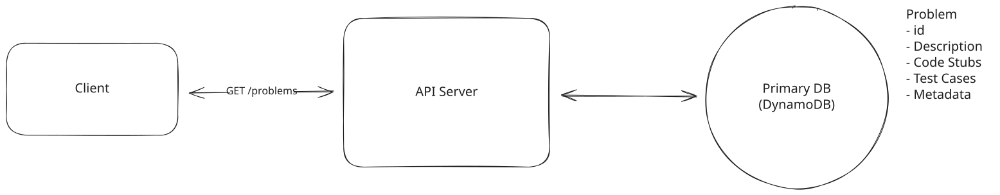
Viewing a list of problems
The core components here are:
- API Server: This server will handle incoming requests from the client and return the appropriate data. So far it only has a single endpoint, but we'll add the others as we go.
- Database: This is where we'll store all of our problems. We'll need to make sure that the database is indexed properly to support pagination. While either a SQL or NoSQL database could work here, I'm going to choose a NoSQL DB like DynamoDB because we don't need complex queries and I plan to nest the test cases as a subdocument in the problem entity.
Our Problem schema would look something like this:
{
id: string,
title: string,
question: string,
level: string,
tags: string[],
codeStubs: {
python: string,
javascript: string,
typescript: string,
...
},
testCases: {
type: string,
input: JSON,
output: JSON
}[]
}The codeStubs for each language would either need to be manually entered by an admin or, in the modern day of LLMs, could be generated automatically given a single language example.
2) Users should be able to view a given problem and code a solution
To view a problem, the client will make a request to the API server with GET /problems/:id and the server will return the full problem statement and code stub after fetching it from the database. We'll use a Monaco Editor to allow users to code their solution in the browser.
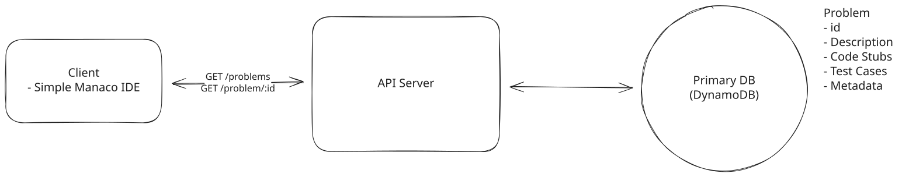
Viewing a specific problem
3) Users should be able to submit their solution and get instant feedback
Ok, it's been easy so far, but here is where things get interesting. When a user submits their solution, we need to run their code against the test cases and return the result. This is where we need to be careful about how we run the code to ensure that it doesn't crash our server or compromise our system.
Let's breakdown some options for code execution:
Approach
The simplest way to run the user submitted code is to run it directly in the API server. This means saving the code to a file in our local filesystem, running it, and capturing the output. This is a terrible idea, don't do it!
Challenges
- Security: Running user code on your server is a massive security risk. If a user submits malicious code, they could potentially take down your server or compromise your system. Consider a user submitting code that deletes all of your data or sends all of your data to a third party. They could also use your server to mine cryptocurrency, launch DDoS attacks, or any number of other malicious activities.
- Performance: Running code is CPU intensive and can easily crash your server if not properly managed, especially if the code is in an infinite loop or has a memory leak.
- Isolation: Running code in the same process as your API server means that if the code crashes, it will take down your server with it and no other requests will be able to be processed.
Approach
A better way to run user submitted code is to run it in a virtual machine (VM) on the physical API Server. A VM is an isolated environment that runs on top of your server and can be easily reset if something goes wrong. This means that even if the user's code crashes the VM, it won't affect your server or other users.
Challenges
The main challenge with this approach is that VMs are resource intensive and can be slow to start up. This means that you'll need to carefully manage your VMs to ensure that you're not wasting resources and that you can quickly spin up new VMs as needed. Additionally, you'll need to be careful about how you manage the lifecycle of your VMs to ensure that you're not running out of resources or leaving VMs running when they're not needed which can prove costly.
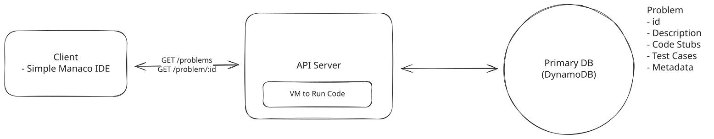
Running user code in vm
Approach
A great (and arguably optimal) solution is to run user submitted code in a container. Containers are similar to VMs in that they provide an isolated environment for running code, but they are much more lightweight and faster to start up. Let's break down the key differences between VMs and containers:
VMs: VMs run on physical hardware through a hypervisor (like VMware or Hyper-V). Each VM includes a full copy of an operating system (OS), the application, necessary binaries, and libraries, making them larger in size and slower to start. VMs are fully isolated, running an entire OS stack, which adds overhead but provides strong isolation and security.
Containers: Containers, on the other hand, share the host system's kernel and isolate the application processes from each other. They include the application and its dependencies (libraries, binaries) but not a full OS, making them lightweight and enabling faster start times. Containers offer less isolation than VMs but are more efficient in terms of resource usage and scalability.
We would create a container for each runtime that we support (e.g. Python, JavaScript, Java) that installs the necessary dependencies and runs the code in a sandboxed environment. Rather than spinning up a new VM for each user submission, we can reuse the same containers for multiple submissions, reducing resource usage and improving performance.
Challenges
Given that containers share the host OS kernel, we need to properly configure and secure the containers to prevent users from breaking out of the container and accessing the host system. We also need to enforce resource limits to prevent any single submission from utilizing excessive system resources and affecting other users. More about these optimizations in the deep dive below.
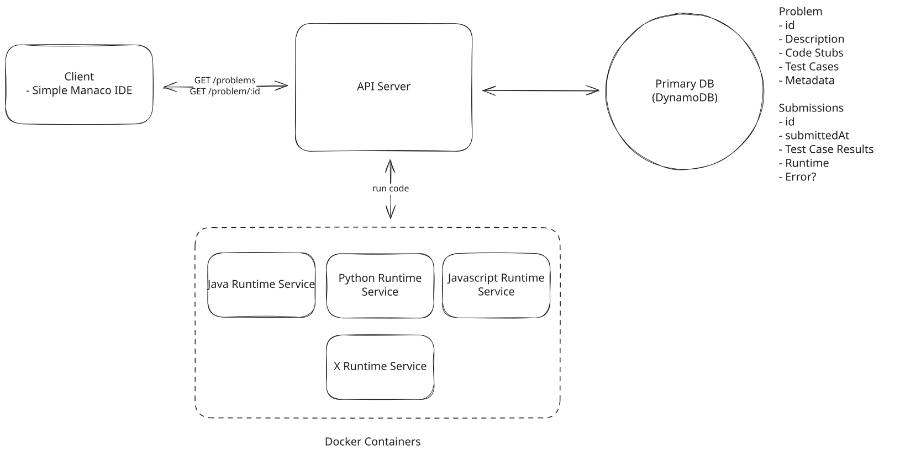
Running user code in containers
Approach
Another great option is to run user submitted code in a serverless function. Serverless functions are small, stateless, event-driven functions that run in response to triggers (e.g. an HTTP request). They are managed by a cloud provider and automatically scale up or down based on demand, making them a great option for running code that is CPU intensive or unpredictable in terms of load.
In this approach, we would create a serverless function for each runtime that we support (e.g. Python, JavaScript, Java) that installs the necessary dependencies and runs the code in a sandboxed environment. When a user submits their code, we would trigger the appropriate serverless function to run the code and return the result.
Challenges
The main challenge with this approach is that serverless functions have a cold start time, which can introduce latency for the first request to a function. Additionally, serverless functions have resource limits that can impact the performance of long running or resource intensive code. We would need to carefully manage these limits to ensure that we're not running out of resources or hitting performance bottlenecks.
While Serverless (lambda) functions are a great option, I am going to proceed with the container approach given I don't anticipate a significant variance in submission volume and I'd like to avoid any cold start latency. So with our decision made, let's update our high-level design to include a container service that will run the user's code and break down the flow of data through the system.
Pattern: Managing Long Running Tasks
Code execution in LeetCode can take several seconds as containers run user code against hundreds of test cases. This demonstrates the long-running tasks pattern, where APIs immediately return job IDs while background workers handle time-consuming operations like video transcoding, report generation, or data processing, preventing timeouts and enabling systems to scale.
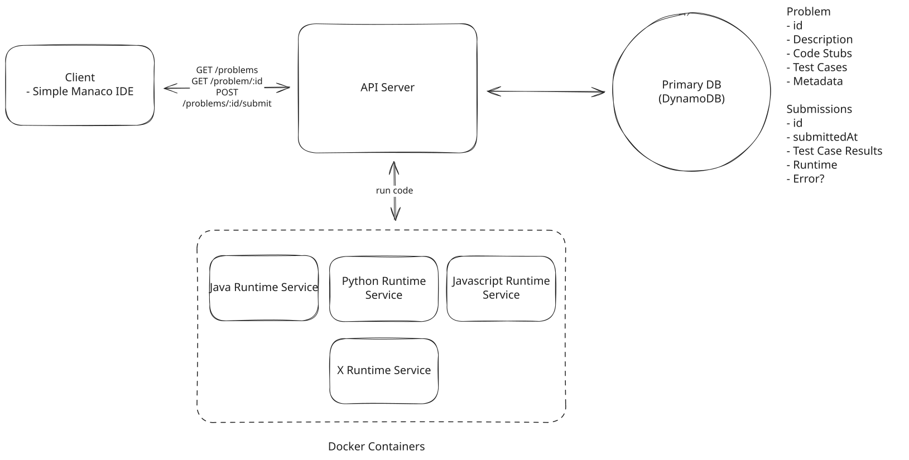
Running user code in containers
When a user makes a submission, our system will:
- The API Server will receive the user's code submission and problem ID and send it to the appropriate container for the language specified.
- The isolated container runs the user's code in a sandboxed environment. The container itself doesn't make outbound calls. Instead, the worker that manages the container invokes it synchronously (e.g. via Docker's exec API), waits for completion, and reads the output directly from stdout or a mounted volume.
- The API Server will then store the submission results in the database and return the results to the client.
4) Users should be able to view a live leaderboard for competitions
First, we should define a competition. We will define them as:
- 90 minutes long
- 10 problems
- Up to 100k users
- Scoring is the number of problems solved in the 90 minutes. In case of tie, we'll rank by the time it took to complete all 10 problems (starting from competition start time).
The easiest thing we can do when users request the leaderboard via /leaderboard/:competitionId is to query the submission table for all items/rows with the competitionId and then group by userId, ordering by the number of distinct problems solved (since a user might submit multiple passing solutions for the same problem).
In a SQL database, this would be a query like:
SELECT userId, COUNT(DISTINCT problemId) as numSolvedProblems, MIN(submittedAt) as lastSolveTime
FROM submissions
WHERE competitionId = :competitionId AND passed = true
GROUP BY userId
ORDER BY numSolvedProblems DESC, lastSolveTime ASCIn a NoSQL DB like DynamoDB, you could create a Global Secondary Index (GSI) with competitionId as the partition key. This lets you efficiently query all submissions for a given competition without making competitionId the table's primary key (which wouldn't work since it's optional and not unique). You'd then pull the results into memory and group and sort.
Once we have the leaderboard, we'll pass it back to the client to display. In order to make sure it's fresh, the client will need to request the leaderboard again after every ~5 seconds or so.
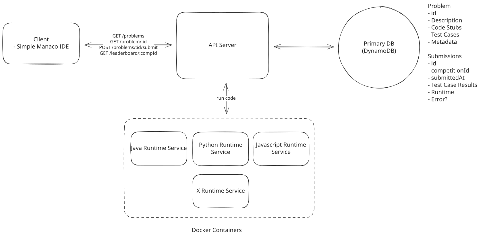
Leaderboard
Tying it all together:
- User requests the leaderboard via /leaderboard/:competitionId
- The API server initiates a query to the submission table in our database to get all successful submissions for the competition.
- Whether via the query itself, or in memory, we'll create the leaderboard by ranking users by the number of distinct problems solved, with ties broken by earliest solve time.
- Return the leaderboard to the client.
- The client will request the leaderboard again after 5 seconds so ensure it is up to date.
Astute readers will realize this solution isn't very good as it will put a significant load on the database. We'll optimize this in a deep dive.
Potential Deep Dives
With the core functional requirements met, it's time to delve into the non-functional requirements through deep dives. Here are the key areas I like to cover for this question.
The extent to which a candidate should proactively lead the deep dives is determined by their seniority. For instance, in a mid-level interview, it is entirely reasonable for the interviewer to lead most of the deep dives. However, in senior and staff+ interviews, the expected level of initiative and responsibility from the candidate rises. They ought to proactively anticipate challenges and identify potential issues with their design, while suggesting solutions to resolve them.
1) How will the system support isolation and security when running user code?
By running our code in an isolated container, we've already taken a big step towards ensuring security and isolation. But there are a few things we'll want to include in our container setup to further enhance security:
- Read Only Filesystem: To prevent users from writing to the filesystem, we can mount the code directory as read-only and write any output to a temporary directory that is deleted a short time after completion.
- CPU and Memory Bounds: To prevent users from consuming excessive resources, we can set CPU and memory limits on the container. If these limits are exceeded, the container will be killed, preventing resource exhaustion.
- Explicit Timeout: To prevent users from running infinite loops, we can wrap the user's code in a timeout that kills the process if it runs for longer than a predefined time limit, say 5 seconds. This will also help us meet our requirement of returning submission results within 5 seconds.
- Limit Network Access: To prevent users from making network requests, we can disable network access in the container, ensuring that users can't make any external calls. If working within the AWS ecosystem, we can use Virtual Private Cloud (VPC) Security Groups and NACLs to restrict all outbound and inbound traffic except for predefined, essential connections.
- No System Calls (Seccomp): We don't want users to be able to make system calls that could compromise the host system. We can use seccomp to restrict the system calls that the container can make.
Note that in an interview you're likely not expected to go into a ton of detail on how you'd implement each of these security measures. Instead, focus on the high-level concepts and how they would help to secure the system. If your interviewer is interested in a particular area, they'll ask you to dive deeper. To be concrete, this means just saying, "We'd use docker containers while limiting network access, setting CPU and memory bounds, and enforcing a timeout on the code execution" is likely sufficient.
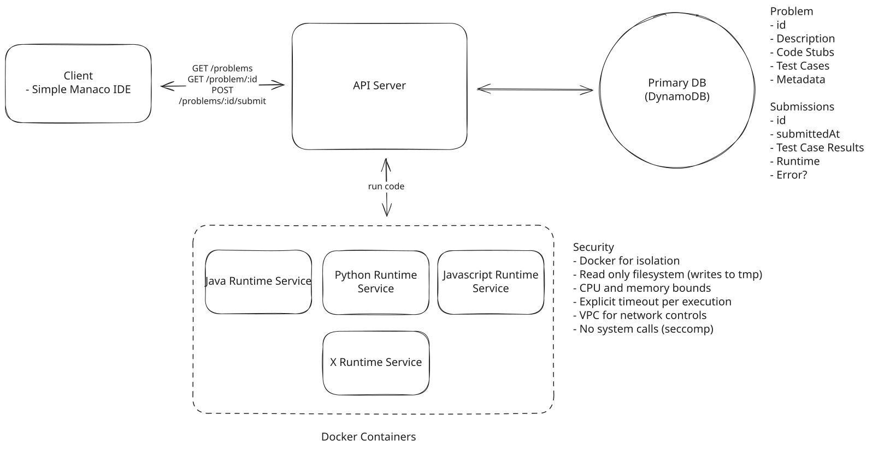
Security
2) How would you make fetching the leaderboard more efficient?
As we mentioned during our high-level design, our current approach is not going to cut it for fetching the leaderboard, it's far too inefficient. Let's take a look at some other options:
Approach
This is what we have now in the high-level design. We store all submission results in the main database. Clients poll the server every few seconds, and on each poll, the server queries the database for the top N users, sorts them, and returns the result. We'd then keep the data fresh by having the client poll every 5 seconds. While this works better if we switched to a relational database, it still has significant shortcomings.
Challenges
The main issues with this approach are the high database load due to frequent queries and increased latency as the number of users grows. It doesn't scale well for real-time updates, especially during competitions with many participants. As the system grows, this method would quickly become unsustainable, potentially leading to database overload and poor user experience.
This approach would put an enormous strain on the database, potentially causing performance issues and increased latency. With each user poll triggering a query for a million records every 5 seconds, the database would struggle to keep up, especially during peak times or competitions. This frequent querying and sorting would also consume significant computational resources, making the system inefficient and potentially unstable under high load.
Approach
To reduce the load on the database, we can introduce a cache (e.g., Redis) that stores the current leaderboard. The cache is updated periodically, say every 30 seconds, by querying the database. When clients poll the server, we return the cached leaderboard instead of querying the database each time.
Challenges
While this approach reduces database load, it still has some limitations. Updates aren't truly real-time, and there's still polling involved, which isn't ideal for live updates. There's also a potential for race conditions if the cache update frequency is too low. However, this method is a significant improvement over the previous approach and could work well for smaller-scale competitions.
Approach
This solution uses Redis sorted sets to maintain a real-time leaderboard while storing submission results in the main database. When a submission is processed, both the database and the Redis sorted set are updated. Clients poll the server every 5 seconds for leaderboard updates, and the server returns the top N users from the Redis sorted set which is wicked fast and requires no expensive database queries.
Redis sorted sets are an in-memory data structure that allows us to efficiently store and retrieve data based on a score. This is perfect for our use case, as we can update the leaderboard by adding or removing users and their scores, and then retrieve the top N users with the highest scores.
The Redis sorted set uses a key format like competition:leaderboard:{competitionId}, with the score being the user's total score or solve time, and the value being the userId. We'd implement an API endpoint like GET /competitions/:competitionId/leaderboard?top=100. When processing a submission, we'd update Redis with a command like ZADD competition:leaderboard:{competitionId} {score} {userId}. To retrieve the top N users, we'd use ZRANGE competition:leaderboard:{competitionId} 0 N-1 REV WITHSCORES (note: ZREVRANGE is deprecated as of Redis 6.2 in favor of ZRANGE with the REV flag).
Then, when a user requests the leaderboard, we'll send them the first couple pages of results to display (maybe the top 1,000). Then, as they page via the client, we can fetch the next page of results from the server, updating the UI in the process.
Benefits
This approach offers several advantages. It's simpler to implement compared to WebSockets while still providing near real-time updates. The 5-second delay is generally acceptable for most users. It significantly reduces load on the main database and scales well for our expected user base. Of course, we could lower the polling frequency if needed as well, but 5 seconds is likely more than good enough given the relative infrequency of leaderboard updates.
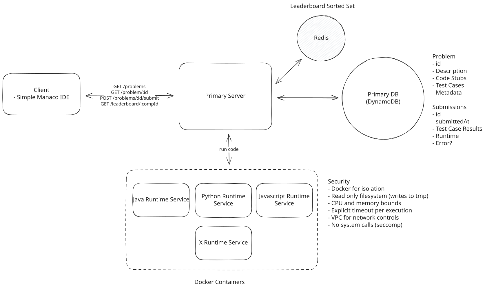
Redis Polling
Many candidates that I ask this question of propose a Websocket connection for realtime updates.
While this isn't necessarily wrong, they would be overkill for our system given the modest number of users and the acceptable 5-second delay. The Redis Sorted Set with Periodic Polling solution strikes a good balance between real-time updates and system simplicity. It's more than adequate for our needs and can be easily scaled up if required in the future.
If we find that the 5-second interval is too frequent, we can easily adjust it. We could even implement a progressive polling strategy where we poll more frequently (e.g., every 2 seconds) during the last few minutes of a competition and less frequently (e.g., every 10 seconds) at other times.
Staff candidates in particular are effective at striking these balances. They articulate that they know what the more complex solution is, but they are clear about why it's likely overkill for the given system.
3) How would the system scale to support competitions with 100,000 users?
The main concern here is that we get a sudden spike in traffic, say from a competition or a popular problem, that could overwhelm the containers running the user code. The reality is that 100k is still not a lot of users, and our API server, via horizontal scaling, should be able to handle this load without any issues. However, given code execution is CPU intensive, we need to be careful about how we manage the containers.
Approach
The easiest option is to just run our containers on a larger instance type with more CPU and memory. This is known as vertical scaling and is the simplest way to increase the capacity of our system.
This is a good time to do a bit of math. If we estimate a peak of 10k submission at a time (imagine its a competition) and each submission runs against ~100 test case. We are likely to become CPU bound very quickly. Let's make a conservative assumption that each test case takes 100ms to run (in practice, most test cases finish in 10-50ms). This means that each submission could take up to 10s to run in the worst case, though typical submissions would land within our 5-second target. If we have 10k submissions, that's 1 million test cases, which will take 100,000 seconds to run. That's over 27 hours and we would need approximately 1,667 CPU cores to handle this load within one minute. This clearly indicates that vertical scaling alone, especially considering that even the largest AWS instance types top out at a few hundred vCPUs, is not a viable solution.
Even if we could, it's not easy to vertically scale dynamically so we'd have a big expensive machine sitting around most of the time not doing much. Big waste of money!
Approach
We can horizontally scale each of the language specific containers to handle more submissions. This means that we can spin up multiple containers for each language and distribute submissions across them. This can be dynamically managed through auto-scaling groups that automatically adjust the number of active instances in response to current traffic demands, CPU utilization, or other memory metrics. In the case of AWS, we can use ECS to manage our containers and ECS Auto Scaling to automatically adjust the number of containers based on demand.
Challenges
The only considerable downside here is the risk of over-provisioning. If we spin up too many containers, we could end up wasting resources and incurring unnecessary costs. That said, modern cloud providers make it easy to scale up and down based on demand, so this is a manageable risk.
Approach
We can take the same exact approach as above but add a queue between the API server and the containers. This will allow us to buffer submissions during peak times and ensure that we don't overwhelm the containers. We can use a managed queue service like SQS to handle this for us.
When a user submits their code, the API server will add the submission to the queue and the containers will pull submissions off the queue as they become available. This will help us manage the load on the containers and ensure that we don't lose any submissions during peak times.
Once our worker gets the results, it will notify the App Server so it can update both the database and the cache simultaneously.
One important thing to note is that the introduction of the queue has made the system asynchronous. This means that the API server will no longer be able to return the results of the submission immediately. Instead, the user will need to poll the server for the results. We introduce a new endpoint, say GET /check/:id, that is polled every second by the client to check if the submission has been processed. It simply looks up the submission in the database and returns the results if they are available or returns a "processing" message if not.
Some candidates try to introduce a persistent connection like WebSockets to avoid polling. This could certainly work, but it adds complexity to the system and is likely not necessary given the polling interval is only a second.
Fun fact, this is exactly what LeetCode does when you submit a solution to a problem. Click submit with your network tab open and you'll see the polling in action!
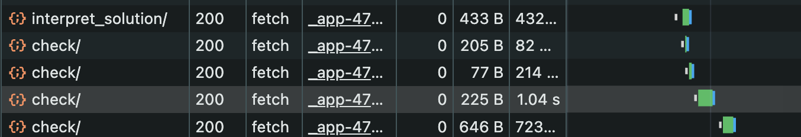
Challenges
There could be a really strong case made that this is overengineering and adding unnecessary complexity. Given the scale of the system, it's likely that we could handle the load without the need for a queue and if we require users to register for competitions, we would have a good sense of when to expect peak traffic and could scale up the containers in advance.
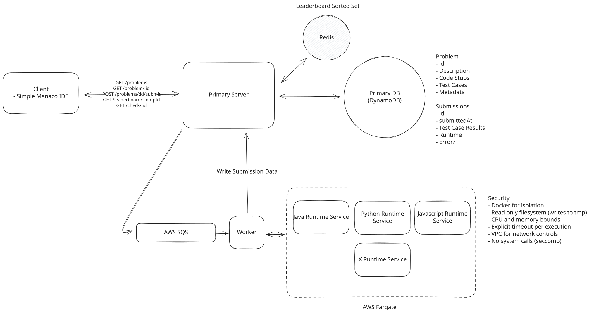
Queue
While the addition of the queue is likely overkill from a volume perspective, I would still opt for this approach with my main justification being that it also enables retries in the event of a container failure. This is a nice to have feature that could be useful in the event of a container crash or other issue that prevents the code from running successfully. We'd simply requeue the submission and try again. Also, having that buffer could help you sleep at night knowing you're not going to lose any submissions, even in the event of a sudden spike in traffic (which I would not anticipate happening in this system).
There is no right or wrong answer here, weighing the pros and cons of each approach is really the key in the interview.
4) How would the system handle running test cases?
One follow up question I like to ask is, "How would you actually do this? How would you take test cases and run them against user code of any language?" This breaks candidates out of "box drawing mode" and forces them to think about the actual implementation of their design.
You definitely don't want to have to write a set of test cases for each problem in each language. That would be a nightmare to maintain. Instead, you'd write a single set of test cases per problem which can be run against any language.
To do this, you'll need a standard way to serialize the input and output of each test case and a test harness for each language which can deserialize these inputs, pass them to the user's code, and compare the output to the deserialized expected output.
For example, lets consider a simple question that asks the maximum depth of a binary tree. Using Python as our example, we can see that the function itself takes in a TreeNode object.
# Definition for a binary tree node.
# class TreeNode(object):
# def __init__(self, val=0, left=None, right=None):
# self.val = val
# self.left = left
# self.right = right
class Solution(object):
def maxDepth(self, root):
"""
:type root: TreeNode
:rtype: int
"""To actually run this code, we would need to have a TreeNode file that exists in the same directory as the user's code in the container. We would take the standardized, serialized input for the test case, deserialize it into a TreeNode object, and pass it to the user's code. The test case could look something like:
{
"id": 1,
"title": "Max Depth of Binary Tree",
...
"testCases": [
{
"type": "tree",
"input": [3,9,20,null,null,15,7],
"output": 3
},
{
"type": "tree",
"input": [1,null,2],
"output": 2
}
]
}For a Tree object, we've decided to serialize it into an array using level-order (BFS) traversal. Each language will have it's own version of a TreeNode class that can deserialize this array into a TreeNode object to pass to the user's code.
We'd need to define the serialization strategy for each data structure and ensure that the test harness for each language can deserialize the input and compare the output to the expected output.
Final Design
Putting it all together, one final design could look like this:
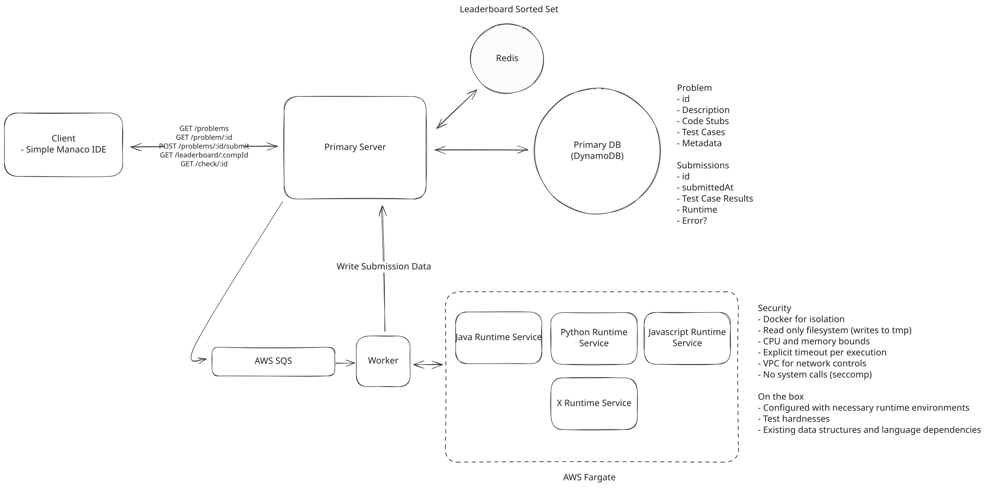
Final
What is Expected at Each Level?
You may be thinking, “how much of that is actually required from me in an interview?” Let’s break it down.
Mid-level
Breadth vs. Depth: A mid-level candidate will be mostly focused on breadth (80% vs 20%). You should be able to craft a high-level design that meets the functional requirements you've defined, but many of the components will be abstractions with which you only have surface-level familiarity.
Probing the Basics: Your interviewer will spend some time probing the basics to confirm that you know what each component in your system does. For example, if you add an API Gateway, expect that they may ask you what it does and how it works (at a high level). In short, the interviewer is not taking anything for granted with respect to your knowledge.
Mixture of Driving and Taking the Backseat: You should drive the early stages of the interview in particular, but the interviewer doesn’t expect that you are able to proactively recognize problems in your design with high precision. Because of this, it’s reasonable that they will take over and drive the later stages of the interview while probing your design.
The Bar for LeetCode: For this question, an IC4 candidate will have clearly defined the API endpoints and data model, landed on a high-level design that is functional and meets the requirements. They would have understood the need for security and isolation when running user code and ideally proposed either a container, VM, or serverless function approach.
Senior
Depth of Expertise: As a senior candidate, expectations shift towards more in-depth knowledge — about 60% breadth and 40% depth. This means you should be able to go into technical details in areas where you have hands-on experience. It's crucial that you demonstrate a deep understanding of key concepts and technologies relevant to the task at hand.
Articulating Architectural Decisions: You should be able to clearly articulate the pros and cons of different architectural choices, especially how they impact scalability, performance, and maintainability. You justify your decisions and explain the trade-offs involved in your design choices.
Problem-Solving and Proactivity: You should demonstrate strong problem-solving skills and a proactive approach. This includes anticipating potential challenges in your designs and suggesting improvements. You need to be adept at identifying and addressing bottlenecks, optimizing performance, and ensuring system reliability.
The Bar for LeetCode: For this question, IC5 candidates are expected to speed through the initial high level design so you can spend time discussing, in detail, how you would run user code in a secure and isolated manner. You should be able to discuss the pros and cons of running code in a container vs a VM vs a serverless function and be able to justify your choice. You should also be able to break out of box drawing mode and discuss how you would actually run test cases against user code.
Staff+
I don't typically ask this question of staff+ candidates given it is on the easier side. That said, if I did, I would expect that they would be able to drive the entire conversation, proactively identifying potential issues with the design and proposing solutions to address them. They should be able to discuss the trade-offs between different approaches and justify their decisions. They should also be able to discuss how they would actually run test cases against user code and how they would handle running code in a secure and isolated manner while meeting the 5 second response time requirement. They would ideally design a very simple system free of over engineering, but with a clear path to scale if needed.
Test Your Knowledge
Answer the question below to find your gaps.
Question 1 of 15
Which technique prevents infinite loops in user-submitted code?
1
Database indexing
2
Load balancers distributing requests across multiple worker instances
3
API caching
4
Execution timeouts